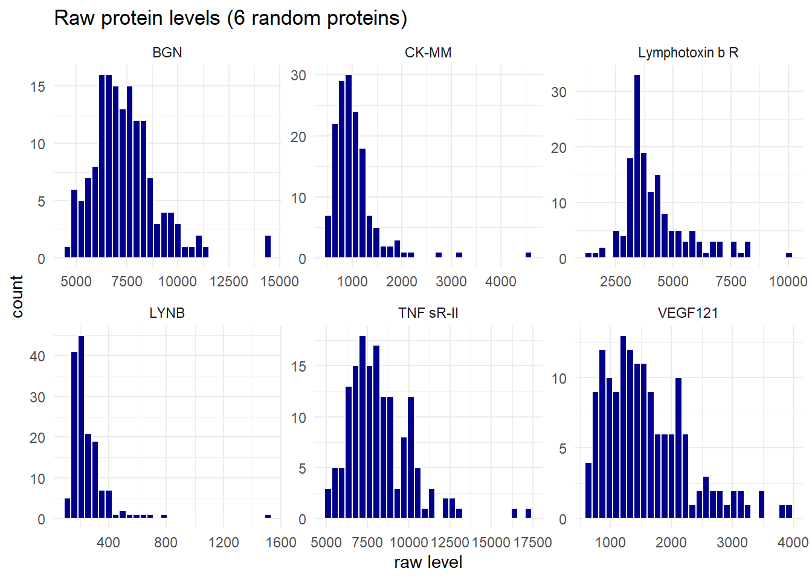
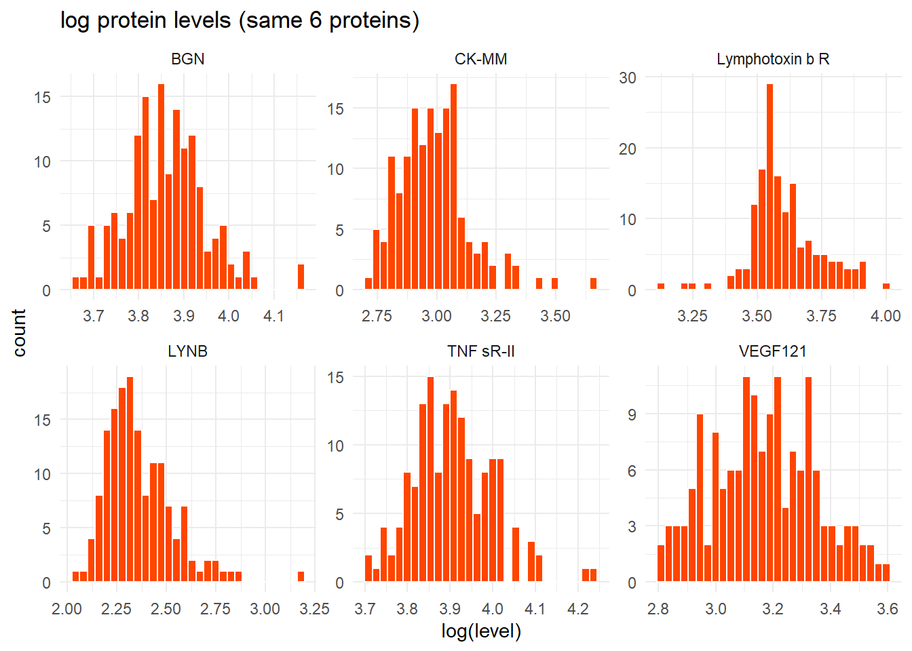
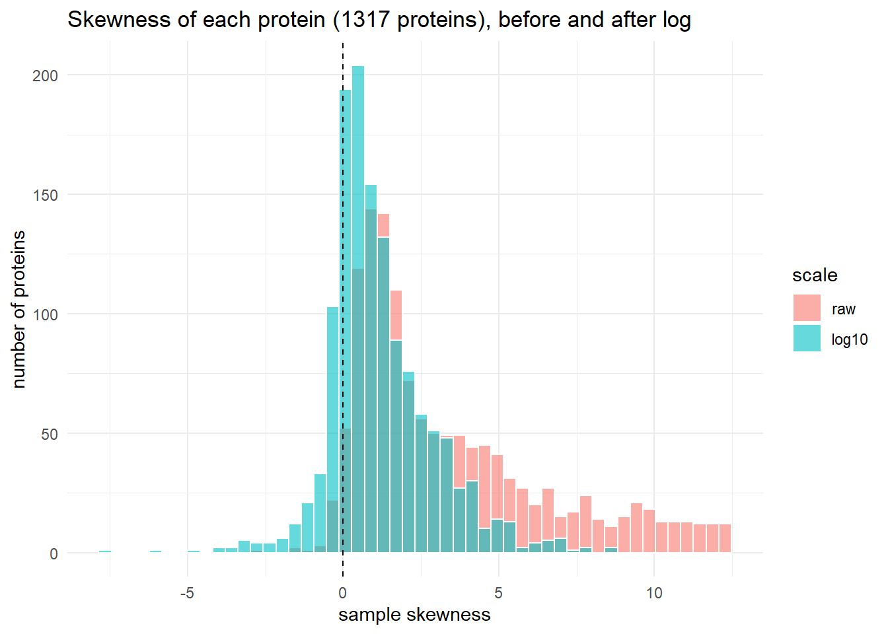
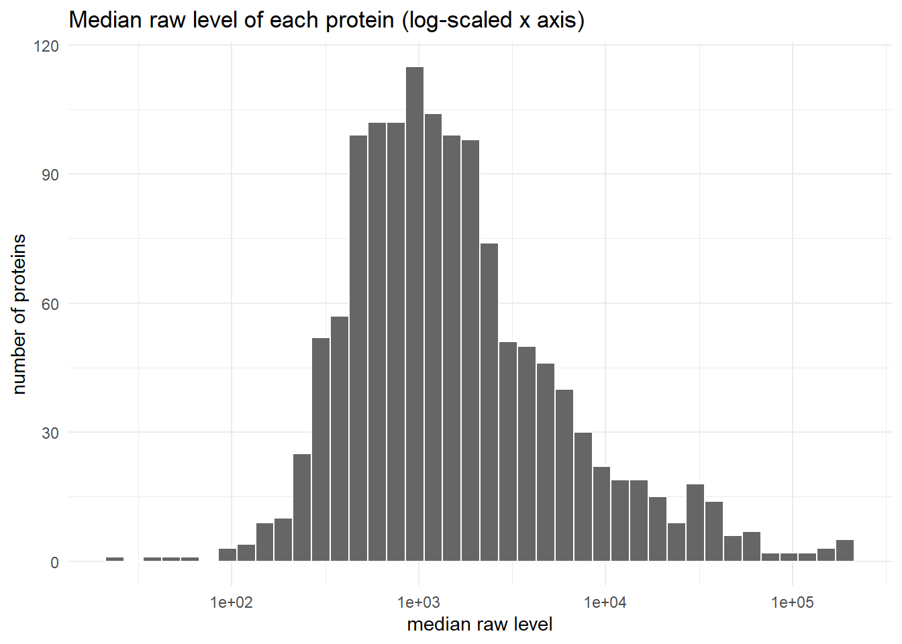
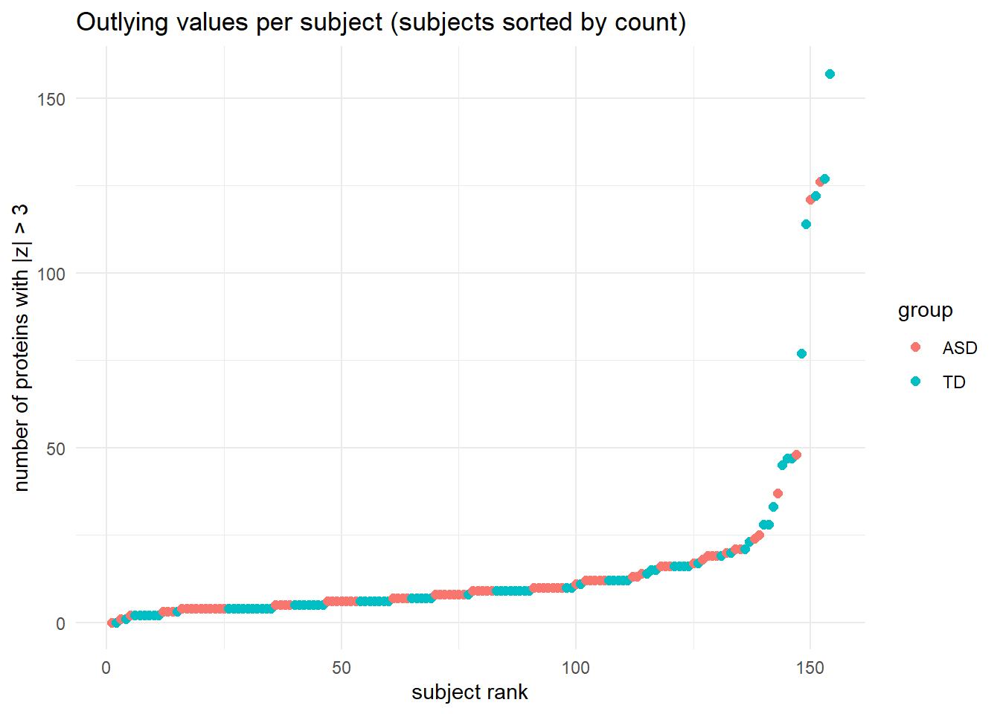
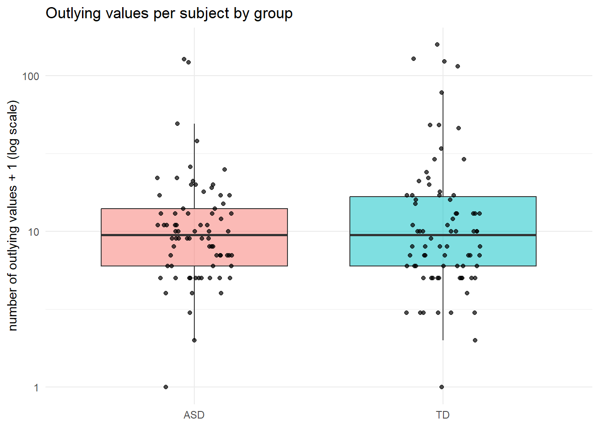
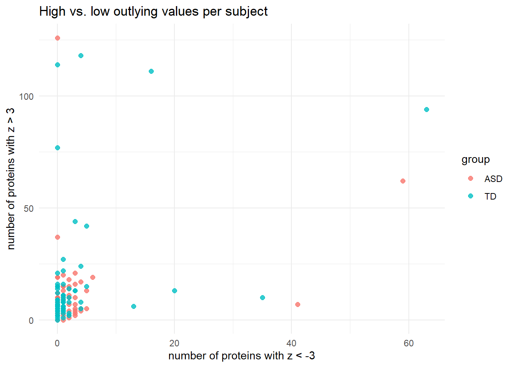

flowchart TD
A(["Preprocessed Protein Data"]) --> B1(["Random Forest<br/>(Top 10 by Mean Decrease Gini)"])
A --> B2(["Two-Sample t-Tests<br/>(Top 10 by p-value)"])
A --> B3(["ADOS Correlation<br/>(Top 10 by |r|)"])
B1 --> C(["Hard Intersection<br/>(Overlap across all 3 methods)"])
B2 --> C
B3 --> C
C --> D(["5 Core Proteins<br/>(IgD, suPAR, MAPK14, EPHB2, DERM)"])
D --> E(["Logistic Regression on 13 proteins not in Core Panel"])
E --> F(["Final Panel (9 Proteins)<br/>Core + ROR1, GI24, eIF-4H, ARSB"])
F --> G(["Logistic Regression Classifier<br/>(1,000 Random 80/20 Splits)"])
G --> H(["Reported Metrics<br/>AUC = 0.860, Sens = 0.833, Spec = 0.846"])
style A fill:#3949ab,stroke:#1a237e,stroke-width:2px,color:#ffffff
style B1 fill:#283593,stroke:#1a237e,stroke-width:2px,color:#ffffff
style B2 fill:#283593,stroke:#1a237e,stroke-width:2px,color:#ffffff
style B3 fill:#283593,stroke:#1a237e,stroke-width:2px,color:#ffffff
style C fill:#7e57c2,stroke:#4527a0,stroke-width:2px,color:#ffffff
style D fill:#29b6f6,stroke:#0277bd,stroke-width:2px,color:#000000
style E fill:#26a69a,stroke:#00695c,stroke-width:2px,color:#ffffff
style F fill:#9ccc65,stroke:#558b2f,stroke-width:2px,color:#000000
style G fill:#78909c,stroke:#37474f,stroke-width:2px,color:#ffffff
style H fill:#ff7043,stroke:#d84315,stroke-width:2px,color:#ffffff
Biomarkers of ASD
If you want a subtitle put it here
Abstract
This report explores the sensitivity of the proteomic biomarker discovery pipeline published by Hewitson et al. (2021) for identifying autism spectrum disorder (ASD) in young males. We first examined preprocessing choices, confirming that raw protein measurements exhibited extreme positive skewness that calls for logarithmic transformation, and demonstrating that outlying values (z-score above 3 or below -3) are concentrated within specific subjects across many proteins rather than showing diagnostic group bias. We then evaluated the robustness of the in-class classification methodology under three design modifications: partitioning data prior to feature selection to prevent data leakage, selecting a larger pool of candidate proteins, and combining selected features using a fuzzy intersection. Introducing an initial training partition reduced the test ROC-AUC from 0.883 to 0.734 and accuracy from 0.774 to 0.688, showing optimistic bias in the unpartitioned selection process. On the other hand, expanding the candidate pool and using a fuzzy intersection yielded nominal test performance gains on the evaluated split. Finally, we tested a simpler 3-protein classifier selected through cross-validated t-test rankings, which achieved a test accuracy of 0.594. Overall, our findings demonstrate that biomarker panel performance is highly sensitive to validation partitioning and feature combination rules.
Dataset
The data for this assignment were gathered from a group of individuals from the Johnson Center for Child Health and Development in Austin, TX. These findings were published in the since retracted article Hewitson et. al (2021). The sample consists of a total of 154 boys aged 8 months to 8 years, with 76 being diagnosed with autism and 78 being classified as typically developing. The autism (ASD) group had a mean age of 5.6 years (SD of 1.7 years) and the typically developing (TD) group had a mean age of 5.7 years (SD of 2.0 years). The ASD group was professionally assessed using both the Autism Diagnostic Observation Schedule (ADOS) and the Autism Diagnostic Interview–Revised (ADI-R). DSIM-5 criteria was used along with these assessments to reach a clinical diagnosis. ADOS scores were also used as a measure of symptom severity for the ASD group. TD group members were confirmed to have no close lineage with people diagnosed with ASD and were ruled out of having ASD using the ABAS-II assessment. Blood was drawn from all studied individuals from both groups and stored in a 3.5 ml Serum Separation Tube before being cooled and shipped to SomaLogic for lab analysis.
SOMAScan 1.3k was used for analysis and SomaLogic ran the assays for this dataset. 1,317 proteins were examined by the assay. In the paper study, 192 proteins failed to pass quality control measures, but those proteins were still included in our analysis for module 1 using the raw dataset. The protein data was normalized using the log10 transform as well as z-transformation. Any z-transformed values less than -3 or greater than 3 were excluded from the dataset to deal with potential outliers.
Summary of published analysis
To isolate predictive biomarker candidates from the preprocessed protein profiles, the authors in the paper implemented three different feature selection techniques. First, Random Forest models were trained over 1,000 iterations to rank features based on their average Mean Decrease Gini. Second, two-sample t-tests were conducted between the ASD and TD cohorts to identify proteins with significant differential abundance (high t-test values). Third, correlation coefficients were calculated to assess linear relationships between individual protein levels and ADOS total symptom severity scores (SA + RRB), the proteins here were ranked by the absolute value of their correlation coefficient. The 30 ranked proteins (10 from each respective method) were then selected for downstream panel construction.
The hard intersection across all three methods identified five “core” proteins common to every list: IgD, suPAR, MAPK14, EPHB2, and DERM. Using this 5-protein core as a baseline, the authors used logistic regression to evaluate whether any remaining non-core candidates from the top-10 lists provided additive predictive power. Four additional proteins (ROR1, GI24, eIF-4H, and ARSB) were found to enhance model performance, making a final panel of 9 proteins.
The utility of this 9-protein panel was evaluated using logistic regression across 1,000 random 80/20 train/test splits, with the subject’s ASD or TD group as the output variable. The classifier achieved an estimated area under the receiver operating characteristic curve (AUROC) of 0.860 plus/minus 0.064, with a mean sensitivity of 0.833 plus/minus 0.118 and a mean specificity of 0.846 plus/minus 0.118.
Findings
Impact of preprocessing
Using the same parsing as preprocessing.R, but without any transformation, scaling, or trimming…
Raw vs. log distributions for a random sample of proteins
Looking at the distribution of raw values for a sample of proteins…


Skewness across all proteins
| scale | median_skew | pct_skew_gt_1 | pct_abs_skew_lt_0.5 |
|---|---|---|---|
| log10 | 0.84 | 45.33 | 31.59 |
| raw | 2.28 | 76.08 | 9.95 |

Scale differences between proteins

Major Takeaways
Raw protein levels are strongly right-skewed: the median skewness across proteins is 2.28 on the raw scale vs. 0.84 after a log transform, and 76% of proteins have skewness above 1 on the raw scale vs. 45% after the transform.
A handful of very large values dominate each raw distribution. This is typical of concentration/intensity measurements, where variation is multiplicative (e.g., a fold change) rather than additive. Taking logs turns multiplicative variation into additive variation and pulls in the long right tail, which suits the methods used downstream (t-tests, which assume roughly normal data; logistic regression; and standardization, where the mean and SD would otherwise be inflated by a few extreme values). Proteins also differ in typical level by several orders of magnitude, so a common scale is needed before they can be compared or used jointly, which is handled by centering and scaling.
The log transform does not remove the skew entirely: a sizable share of proteins still have skewness above 1 on the log scale.
Impact of outliers
Removing the trimming step from preprocessing.R, then looking at where values with \(|z| > 3\) occur…
Overall frequency of outlying values
| total_values | outlying_values | pct_outlying | pct_expected_if_normal |
|---|---|---|---|
| 202818 | 2379 | 1.173 | 0.27 |
Outlying values per subject
| bin | ASD | TD |
|---|---|---|
| 0 | 1 | 1 |
| 1-5 | 19 | 25 |
| 6-10 | 30 | 23 |
| 11-20 | 18 | 16 |
| 21-50 | 6 | 8 |
| 51-100 | 0 | 1 |
| >100 | 2 | 4 |

| subject | group | ados | n_out | n_high | n_low | prop_out |
|---|---|---|---|---|---|---|
| 154 | TD | NA | 157 | 94 | 63 | 0.119 |
| 108 | TD | NA | 127 | 111 | 16 | 0.096 |
| 9 | ASD | 22 | 126 | 126 | 0 | 0.096 |
| 121 | TD | NA | 122 | 118 | 4 | 0.093 |
| 52 | ASD | 7 | 121 | 62 | 59 | 0.092 |
| 77 | TD | NA | 114 | 114 | 0 | 0.087 |
| 147 | TD | NA | 77 | 77 | 0 | 0.058 |
| 24 | ASD | 17 | 48 | 7 | 41 | 0.036 |
| 100 | TD | NA | 47 | 42 | 5 | 0.036 |
| 150 | TD | NA | 47 | 44 | 3 | 0.036 |
Are outlying subjects more common in one group?
| group | subjects | mean_out | median_out | sd_out | max_out | pct_subjects_with_any |
|---|---|---|---|---|---|---|
| ASD | 76 | 13.25 | 8.5 | 19.82 | 126 | 98.68 |
| TD | 78 | 17.59 | 8.5 | 29.25 | 157 | 98.72 |

Direction of the outlying values

Major Takeaways
152 of 154 subjects have at least one outlying value, but the outliers are very unevenly spread: the five subjects with the most outliers account for 27% of all outlying values, and the top handful (subjects 154, 108, 9, 121, 52, 77) each have over 100 proteins beyond \(|z| > 3\), against a median of about 8 per subject. So the outliers are mostly subject-level, not isolated protein-level blips.
Several of these subjects are almost entirely one-sided (e.g., subject 9 has 126 high and 0 low values; subject 77 has 114 high and 0 low), which points to a sample-wide shift (e.g., overall higher signal for that serum sample) rather than many unrelated protein-specific anomalies. A few (subjects 154, 52) have both many high and many low values.
There is no clear difference between groups. The median count is the same in both (8.5), the TD mean is higher (17.6 vs. 13.2 for ASD) only because of a few extreme subjects, and heavy-outlier subjects are slightly more common in TD (9 of 78 vs. 4 of 76). Neither difference is statistically meaningful: Wilcoxon p = 0.82 for the counts and Fisher p = 0.25 for heavy-outlier status.
Methodological variations
The following models include methodological variations. The first model introduces a training partition prior to both protein selection and model fitting. The second model modification increases the number of proteins selected as top predictive proteins from the Multiple Testing and the Random Forest selection methods. The final model modifies the method of combining the proteins selected from each selection method, ultimately including all proteins that were selected by any selection method (rather than only choosing the proteins returned by both selection methods).
Adding Training Partition (Bullet Point 1)
Making the partition:
Selection and Analysis Process:
ASD TD class.error
ASD 41 19 0.3166667
TD 16 46 0.2580645# A tibble: 4 × 3
.metric .estimator .estimate
<chr> <chr> <dbl>
1 sensitivity binary 0.5
2 specificity binary 0.812
3 accuracy binary 0.656
4 roc_auc binary 0.723We began by partitioning the dataset prior to beginning the selection process, and then repeating the protein selection process, through Multiple Testing and Random Forest, on the training set. Then, by using a hard intersection to consolidate the predictive proteins identified from both the Multiple Testing and the Random Forest, these proteins were used to fit a Logistic Regression classification model.
The results above summarize how this modified Logistic Regression model fits on the test set from the partitioned dataset. In comparison to the original in-class analysis, where the data was not partitioned into training and testing sets prior to selecting top predictive proteins, this modified model performs worse. The original roc_auc metric was 0.883, whereas the modified model returns an roc_auc of 0.734.
Also, the modified model’s accuracy also decreased in comparison to the original, in-class analysis. The modified model’s accuracy metric reads 0.6875, whereas the original model’s accuracy metric was 0.774.
Although adding a partition prior to performing protein selection does not make a huge negative impact in model performance, given the context of the model’s goals, a model that is better at predicting diagnoses could have significant impact on a child’s life.
Increase Top Predictive Proteins Modification (Bullet Point 2)
It is important to note this section modifies the original in-class analysis and does not involve the model from the previous step (i.e. there was no partitioning of data into training and test sets before selection the proteins).
[1] "DERM" "RELT" "Calcineurin" "C1QR1"
[5] "MRC2" "IgD" "CXCL16, soluble" "PTN"
[9] "FSTL1" "Cadherin-5" "MAPK2" "TGF-b R III"
[13] "DAF" "MMP-2" "gp130, soluble" "Notch 1"
[17] "MIA" "ALCAM" "MATN2" "ROR1" [1] "DERM" "IgD" "TGF-b R III" "MAPK14" "FSTL1"
[6] "RELT" "eIF-4H" "M2-PK" "SOST" "ALCAM"
[11] "MAPK2" "CK-MB" "RET" "Calcineurin" "TSP4"
[16] "PTN" "ERBB1" "MATN2" "Notch 1" "CSK" # A tibble: 4 × 3
.metric .estimator .estimate
<chr> <chr> <dbl>
1 sensitivity binary 0.812
2 specificity binary 0.867
3 accuracy binary 0.839
4 roc_auc binary 0.946Instead of selecting only 10 top predictive proteins from both Multiple Testing and Random Forest, this section selects 20 top predictive proteins from both selection processes. The (hard) intersection of these 40 proteins is the data that the logistic regression model is fit on.
Comapring roc_auc metrics, this model performed better than the original in-class model. This model, having selected from an intersection of more top predcitve proteins, achieved an roc_auc of 0.891 on the test set. The original in-class model achieved an roc_auc of 0.883 on the test set.
Additionally, this model reached a higher accuracy metric (0.806) compared to the in-class model, which had an accuracy score of 0.774. Both the increase in the roc_auc and accuracy metrics indicate that this modification increased the predictive capability of the logistic regression model.
It is noted that this modification resulted in a smaller sensitivity metric (0.75), comapred to the in-class model, which had a sensitivity metric of 0.812.
Fuzzy Intersection Modification (Bullet Point 3)
It is important to note this section modifies the original in-class analysis and does not include a partitioning of data into training and test sets.
# A tibble: 4 × 3
.metric .estimator .estimate
<chr> <chr> <dbl>
1 sensitivity binary 0.875
2 specificity binary 0.8
3 accuracy binary 0.839
4 roc_auc binary 0.908By using a fuzzy intersection when combining the top predictive proteins selected from the Multiple Testing and the Random Forest means that all of the proteins are included. This is different from the previous method, hard intersection, which only kept proteins that both selection methods recognized as top predictive proteins. This means proteins that one method identified as important predictors, but not identified by the other, were not included in the data that trained the logistic regression.
This is not the case with a fuzzy intersection, and the model logistic regression trained on the fuzzy intersection of top proteins performed better than the in-class model that used hard intersection. The fuzzy modification model, further referred to as the fuzzy model, achieved an roc_auc of 0.9 when used on the test data. . This is both higher than the roc_auc of the original in-class model and the modified models.
In comparison to the original in-class model, the fuzzy model also achieved a higher accuracy metric when used on the test data. The original model reached an accuracy of 0.774, where as the fuzzy model achieved an accuracy of 0.871.
On the basis of the roc_auc and accuracy metrics of all the models included thus far, this model not only outperformed the in-class model , but all of the other modified model when applied to their respective test sets.
Improved classifier
# A tibble: 4 × 3
.metric .estimator .estimate
<chr> <chr> <dbl>
1 sensitivity binary 0.562
2 specificity binary 0.812
3 accuracy binary 0.688
4 roc_auc binary 0.715We tested whether a smaller protein panel could achieve comparable classification performance to the in-class baseline, which used the intersection of t-test and random-forest selections followed by logistic regression. We ranked proteins by t-test p-values using the training data and used five-fold cross-validation to compare panels containing one, two, and three proteins. We selected the panel size with the highest mean cross-validation accuracy, preferring the smaller panel in the event of a tie.
We then fitted a logistic regression model using the selected proteins and evaluated it on the held-out test set. Compared with the baseline, the alternative classifier used 3 proteins instead of 6. Its test accuracy was 0.594, compared with 0.688 for the baseline, a difference of -0.094 percentage points.
This approach, while ultimately slightly worse, provides a simpler alternative to the in-class method. The results indicate whether a smaller panel can maintain or improve classification accuracy on the held-out test set, although further validation on independent data would be needed to establish its reliability.